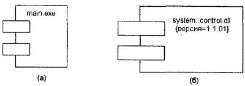
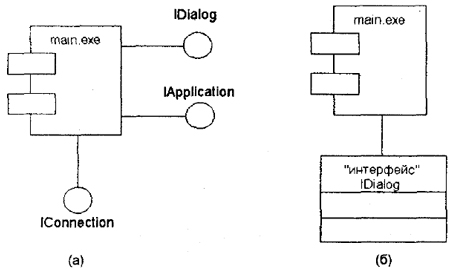
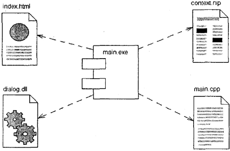
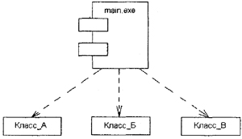
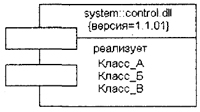
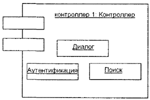

Все рассмотренные ранее диаграммы отражали концептуальные аспекты построения модели системы и относились к логическому уровню представления. Особенность логического представления заключается в том, что оно оперирует понятиями, которые не имеют самостоятельного материального воплощения. Другими словами, различные элементы логического представления, такие как классы, ассоциации, состояния, сообщения, не существуют материально или физически. Они лишь отражают наше понимание структуры физической системы или аспекты ее поведения.
Основное назначение логического представления состоит в анализе структурных и функциональных отношений между элементами модели системы. Однако для создания конкретной физической системы необходимо некоторым образом реализовать все элементы логического представления в конкретные материальные сущности. Для описания таких реальных сущностей предназначен другой аспект модельного представления, а именно физическое представление модели.
Чтобы пояснить отличие логического и физического представлений, рассмотрим в общих чертах процесс разработки некоторой программной системы. Ее исходным логическим представлением могут служить структурные схемы алгоритмов и процедур, описания интерфейсов и концептуальные схемы баз данных. Однако для реализации этой системы необходимо разработать исходный текст программы на некотором языке программирования (C++, Pascal, Basic/VBA, Java). При этом уже в тексте программы предполагается такая организация программного кода, которая предполагает его разбиение на отдельные модули.
Тем не менее исходные тексты программы еще не являются окончательной реализацией проекта, хотя и служат фрагментом его физического представления. Очевидно, программная система может считаться реализованной в том случае, когда она будет способна выполнять функции своего целевого предназначения. А это возможно, только если программный код системы будет реализован в форме исполняемых модулей, библиотек классов и процедур, стандартных графических интерфейсов, файлах баз данных. Именно эти компоненты являются необходимыми элементами физического представления системы.
Таким образом, полный проект программной системы представляет собой совокупность моделей логического и физического представлений, которые должны быть согласованы между собой. В языке UML для физического представления моделей систем используются так называемые диаграммы реализации (implementation diagrams), которые включают в себя две отдельные канонические диаграммы: диаграмму компонентов и диаграмму развертывания. Особенности построения первой из них рассматриваются в этой главе, а второй — в следующей.
Диаграмма компонентов, в отличие от ранее рассмотренных диаграмм, описывает особенности физического представления системы. Диаграмма компонентов позволяет определить архитектуру разрабатываемой системы, установив зависимости между программными компонентами, в роли которых может выступать исходный, бинарный и исполняемый код. Во многих средах разработки модуль или компонент соответствует файлу. Пунктирные стрелки, соединяющие модули, показывают отношения взаимозависимости, аналогичные тем, которые имеют место при компиляции исходных текстов программ. .Основными графическими элементами диаграммы компонентов являются компоненты, интерфейсы и зависимости между ними.
Диаграмма компонентов разрабатывается для следующих целей:
В разработке диаграмм компонентов участвуют как системные аналитики и архитекторы, так и программисты. Диаграмма компонентов обеспечивает согласованный переход от логического представления к конкретной реализации проекта в форме программного кода. Одни компоненты могут существовать только на этапе компиляции программного кода, другие — на этапе его исполнения. Диаграмма компонентов отражает общие зависимости между компонентами, рассматривая последние в качестве классификаторов.
Примечание
Применительно к бизнес-системам программные компоненты следует понимать в более широком смысле, чтобы иметь возможность моделирования бизнес-процессов. В этом случае в качестве компонентов рассматриваются отдельные организационные подразделения (отделы, службы) или документы, которые реально существуют в системе.
Для представления физических сущностей в языке UML применяется специальный термин — компонент (component). Компонент реализует некоторый набор интерфейсов и служит для общего обозначения элементов физического представления модели. Для графического представления компонента может использоваться специальный символ — прямоугольник со вставленными слева двумя более мелкими прямоугольниками (рис. 10.1). Внутри объемлющего прямоугольника записывается имя компонента и, возможно, некоторая дополнительная информация. Изображение этого символа может незначительно варьироваться в зависимости от характера ассоциируемой с компонентом информации.
В метамодели языка UML компонент является потомком классификатора. Он предоставляет организацию в рамках физического пакета ассоциированным с ним элементам модели. Как классификатор, компонент может иметь также свои собственные свойства, такие как атрибуты и операции.
Рис. 10.1. Графическое изображение компонента в языке UML
Так, в первом случае (рис. 10.1, а) с компонентом уровня экземпляра связывается только его имя, а во втором (рис. 10.1, б) — дополнительно имя пакета и помеченное значение.
Примечание
Изображение компонента ведет свое происхождение от обозначения модуля программы, применявшегося некоторое время для отображения особенностей инкапсуляции данных и процедур. Так, верхний маленький прямоугольник концептуально ассоциируется с данными, которые реализует этот компонент (ранее он изображался в форме овала). Нижний маленький прямоугольник ассоциируется с операциями или методами, реализуемыми компонентом. В простых случаях имена данных и методов записывались явно в этих маленьких прямоугольниках, однако в языке UML они не указываются.
Имя компонента подчиняется общим правилам именования элементов модели в языке UML и может состоять из любого числа букв, цифр и некоторых знаков препинания. Отдельный компонент может быть представлен на уровне типа или на уровне экземпляра. Хотя его графическое изображение в обоих случаях одинаковое, правила записи имени компонента несколько отличаются. Если компонент представляется на уровне типа, то в качестве его имени записывается только имя типа с заглавной буквы.
Если же компонент представляется на уровне экземпляра, то в качестве его имени записывается <имя компонента ':' имя типаХ При этом вся строка имени подчеркивается.
Примечание
Хотя правила именования объектов в языке UML требуют подчеркивания имени отдельных экземпляров, применительно к компонентам в литературе подчеркивание их имени часто опускают. В этом случае запись имени компонента со строчной буквы будет характеризовать компонент уровня экземпляра.
В качестве простых имен принято использовать имена исполняемых файлов (с указанием расширения ехе после точки-разделителя), имена динамических библиотек (расширение dll), имена Web-страниц (расширение html), имена текстовых файлов (расширения txt или doc) или файлов справки (hip), имена файлов баз данных (DB) или имена файлов с исходными текстами программ (расширения h, cpp для языка C++, расширение Java для языка Java), скрипты (pi, asp) и др.
Поскольку конкретная реализация логического представления модели системы зависит от используемого программного инструментария, то и имена компонентов будут определяться особенностями синтаксиса соответствующего языка программирования.
В отдельных случаях к простому имени компонента может быть добавлена информация об имени объемлющего пакета и о конкретной версии реализации данного компонента (рис. 10.1, б). Необходимо заметить, что в этом случае номер версии записывается как помеченное значение в фигурных скобках. В других случаях символ компонента может быть разделен на секции, чтобы явно указать имена реализованных в нем интерфейсов. Такое обозначение компонента называется расширенным и рассматривается ниже в этой главе.
Поскольку компонент как элемент физической реализации модели представляет отдельный модуль кода, иногда его комментируют с указанием дополнительных графических символов, иллюстрирующих конкретные особенности его реализации. Строго.говоря, эти дополнительные обозначения для примечаний не специфицированы в языке UML. Однако их применение упрощает понимание диаграммы компонентов, существенно повышая наглядность физического представления. Некоторые из таких общепринятых обозначений для компонентов изображены ниже (рис. 10.2).
В языке UML выделяют три вида компонентов.
Рис. 10.2. Варианты графического изображения компонентов на диаграмме компонентов
Эти элементы иногда называют артефактами, подчеркивая при этом их законченное информационное содержание, зависящее от конкретной технологии реализации соответствующих компонентов. Более того, разработчики могут для этой цели использовать самостоятельные обозначения, поскольку в языке UML нет строгой нотации для графического представления примечаний.
Другой способ спецификации различных видов компонентов — явное указание стереотипа компонента перед его именем. В языке UML для компонентов определены следующие стереотипы:
Следующим элементом диаграммы компонентов являются интерфейсы. Последние уже неоднократно рассматривались ранее, поэтому здесь будут отмечены те их, особенности, которые характерны для представления на диаграммах компонентов. Напомним, что в общем случае интерфейс графически изображается окружностью, которая соединяется с компонентом отрезком линии без стрелок (рис. 10.3, а). При этом имя интерфейса, которое обязательно должно начинаться с заглавной буквы "I", записывается рядом с окружностью. Семантически линия означает реализацию интерфейса, а наличие интерфейсов у компонента означает, что данный компонент реализует соответствующий набор интерфейсов.
Рис. 10.3. Графическое изображение интерфейсов на диаграмме компонентов
Другим способом представления интерфейса на диаграмме компонентов является его изображение в виде прямоугольника класса со стереотипом "интерфейс" и возможными секциями атрибутов и операций (рис. 10.3, б). Как правило, этот вариант обозначения используется для представления внутренней структуры интерфейса, которая может быть важна для реализации.
При разработке программных систем интерфейсы обеспечивают не только совместимость различных версий, но и возможность вносить существенные изменения в одни части программы, не изменяя другие ее части. Таким образом, назначение интерфейсов существенно шире, чем спецификация взаимодействия с пользователями системы (актерами).
Примечание
Характер использования интерфейсов отдельными компонентами может отличаться. Поэтому различают два способа связи интерфейса и компонента. Если компонент реализует некоторый интерфейс, то такой интерфейс называют экспортируемым, поскольку этот компонент предоставляет его в качестве сервиса другим компонентам. Если же компонент использует некоторый интерфейс, который реализуется другим компонентом, то такой интерфейс для первого компонента называется импортируемым. Особенность импортируемого интерфейса состоит в том, что на диаграмме компонентов это отношение изображается с помощью зависимости.
В общем случае отношение зависимости также было рассмотрено ранее (см. главу 5). Напомним, что зависимость не является ассоциацией, а служит для представления только факта наличия такой связи, когда изменение одного элемента модели оказывает влияние или приводит к изменению другого элемента модели. Отношение зависимости на диаграмме компонентов изображается пунктирной линией со стрелкой, направленной от клиента (зависимого элемента) к источнику (независимому элементу).
Зависимости могут отражать связи модулей программы на этапе компиляции и генерации объектного кода. В другом случае зависимость может отражать наличие в независимом компоненте описаний классов, которые используются в зависимом компоненте для создания соответствующих объектов. Применительно к диаграмме компонентов зависимости могут связывать компоненты и импортируемые этим компонентом интерфейсы, а также различные виды компонентов между собой.
В первом случае рисуют стрелку от компонента-клиента к импортируемому интерфейсу (рис. 10.4). Наличие такой стрелки означает, что компонент не реализует соответствующий интерфейс, а использует его в процессе своего выполнения. Причем на этой же диаграмме может присутствовать и другой компонент, который реализует этот интерфейс. Так, например, изображенный ниже фрагмент диаграммы компонентов представляет информацию о том, что компонент с именем "main.exe" зависит от импортируемого интерфейса I Dialog, который, в свою очередь, реализуется компонентом с именем "image.java". Для второго компонента этот же интерфейс является экспортируемым.

Рис. 10.4. Фрагмент диаграммы компонентов с отношением зависимости
Заметим, что изобразить второй компонент с именем "image.java" в форме варианта примечания нельзя именно в силу того факта, что этот компонент реализует интерфейс.
Другим случаем отношения зависимости на диаграмме компонентов является отношение между различными видами компонентов (рис. 10.5). Наличие подобной зависимости означает, что внесение изменений в исходные тексты программ или динамические библиотеки приводит к изменениям самого компонента. При этом характер изменений может быть отмечен дополнительно.
Рис. 10.5. Графическое изображение отношения зависимости между компонентами
Наконец, на диаграмме компонентов могут быть представлены отношения зависимости между компонентами и реализованными в них классами. Эта информация имеет важное значение для обеспечения согласования логического и физического представлений модели системы. Разумеется, изменения в структуре описаний классов могут привести к изменению компонента. Ниже приводится фрагмент зависимости подобного рода, когда некоторый компонент зависит от соответствующих классов.
Рис. 10.6. Графическое изображение зависимости между компонентом и классами
Следует заметить, что в данном случае из диаграммы компонентов не следует, что классы реализованы этим компонентом. Если требуется подчеркнуть, что некоторый компонент реализует отдельные классы, то для обозначения компонента используется расширенный символ прямоугольника. При этом прямоугольник компонента делится на две секции горизонтальной линией. Верхняя секция служит для записи имени компонента, а нижняя секция — для указания дополнительной информации (рис. 10.7).
Рис. 10.7. Графическое изображение компонента с дополнительной информацией о реализуемых им классах
Внутри символа компонента могут изображаться другие элементы графической нотации, такие как классы (компонент уровня типа) или объекты (компонент уровня экземпляра). В этом случае символ компонента изображается таким образом, чтобы вместить эти дополнительные символы. Так, например, изображенный ниже компонент (рис. 10.8) является экземпляром и реализует три отдельных объекта.
Рис. 10.8. Графическое изображение компонента уровня экземпляра, реализующего отдельные объекты
Объекты, которые находятся в отдельном компоненте-экземпляре, изображаются вложенными в символ данного компонента. Подобная вложенность означает, что выполнение компонента влечет выполнение соответствующих объектов. Другими словами, существование компонента в течение времени исполнения программы обеспечивает существование, а возможно, и доступ всех вложенных в него объектов. Что касается доступа к этим объектам, то он может быть дополнительно специфицирован с помощью квантификаторов видимости, подобно видимости пакетов. Содержательный смысл видимости может отличаться для различных видов пакетов.
Так, для компонентов с исходным текстом программы видимость может означать возможность внесения изменений в соответствующие тексты программ с их последующей перекомпиляцией. Для компонентов с исполняемым кодом программы видимость может характеризовать возможность запуска на исполнение соответствующего компонента или вызова реализованных в нем операций или методов.
10.4. Рекомендации по построению диаграммы компонентов
Разработка диаграммы компонентов предполагает использование информации как о логическом представлении модели системы, так и об особенностях ее физической реализации. До начала разработки необходимо принять решения о выборе вычислительных платформ и операционных систем, на которых предполагается реализовывать систему, а также о выборе конкретных баз данных и языков программирования.
После этого можно приступать к общей структуризации диаграммы компонентов. В первую очередь, необходимо решить, из каких физических частей (файлов) будет состоять программная система. На этом этапе следует обратить внимание на такую реализацию системы, которая обеспечивала бы не только возможность повторного использования кода за счет рациональной декомпозиции компонентов, но и создание объектов только при их необходимости.
Речь идет о том, что общая производительность программной системы существенно зависит от рационального использования ею вычислительных ресурсов. Для этой цели необходимо большую часть описаний классов, их операций и методов вынести в динамические библиотеки, оставив в исполняемых компонентах только самые необходимые для инициализации программы фрагменты программного кода.
После общей структуризации физического представления системы необходимо дополнить модель интерфейсами и схемами базы данных. При разработке интерфейсов следует обращать внимание на согласование (стыковку) различных частей программной системы. Включение в модель схемы базы данных предполагает спецификацию отдельных таблиц и установление информационных связей между таблицами.
Наконец, завершающий этап построения диаграммы компонентов связан с установлением и нанесением на диаграмму взаимосвязей между компонентами, а также отношений реализации. Эти отношения должны иллюстрировать все важнейшие аспекты физической реализации системы, начиная с особенностей компиляции исходных текстов программ и заканчивая исполнением отдельных частей программы на этапе ее выполнения. Для этой цели можно использовать различные виды графического изображения компонентов.
При разработке диаграммы компонентов следует придерживаться общих принципов создания моделей на языке UML. В частности, в первую очередь необходимо использовать уже имеющиеся в языке UML компоненты и стереотипы. Для большинства типовых проектов этого набора элементов может оказаться достаточно для представления компонентов и зависимостей между ними.
Если же проект содержит некоторые физические элементы, описание которых отсутствует в языке UML, то следует воспользоваться механизмом расширения. В частности, использовать дополнительные стереотипы для отдельных нетиповых компонентов или помеченные значения для уточнения их отдельных характеристик.
В заключение следует обратить внимание, что диаграмма компонентов, как правило, разрабатывается совместно с диаграммой развертывания, на которой представляется информация о физическом размещении компонентов программной системы по ее отдельным узлам. Особенности построения диаграммы развертывания будут рассмотрены в следующей главе.
| Каталог | Индекс раздела | Оглавление |